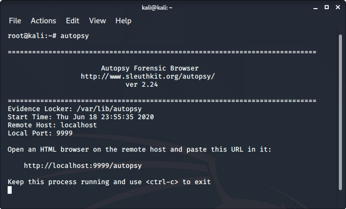
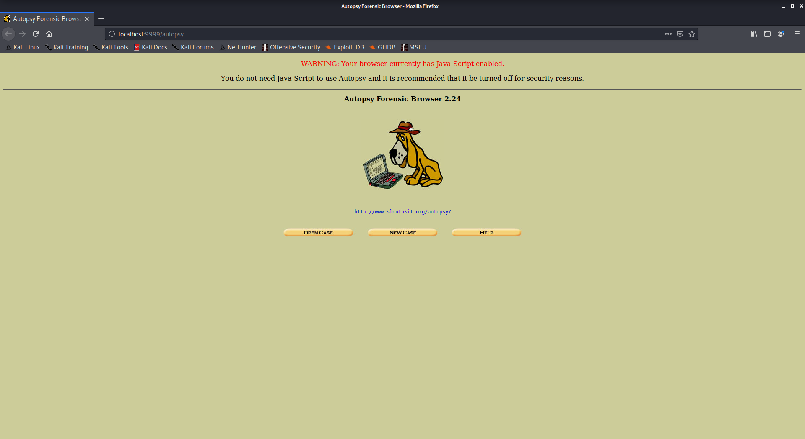

L’autopsie est un outil de criminalistique numérique utilisé pour recueillir des informations à partir de la criminalistique. Ou en d’autres termes, cet outil est utilisé pour enquêter sur des fichiers ou des journaux pour savoir exactement ce qui a été fait avec le système. Il pourrait même être utilisé comme logiciel de récupération pour récupérer des fichiers à partir d’une carte mémoire ou d’une clé USB.

